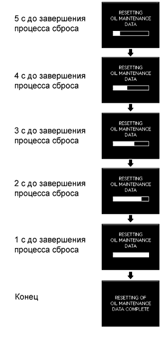

СИСТЕМА ИЗМЕРИТЕЛЬНЫХ ПРИБОРОВ И ИНДИКАТОРОВ > ИНИЦИАЛИЗАЦИЯ |
| СБРОС ДАННЫХ О ЗАМЕНЕ МАСЛА (для моделей с щитком приборов с оригинальной системой подсветки "Optitron" и двигателем 1KD-FTV) |
Переведите замок зажигания в положение ON (ВКЛ) и, используя переключатель ODO/TRIP, отобразите экран данных TRIP A.
Выключите зажигание.
Удерживая переключатель ODO/TRIP, установите замок зажигания в положение ON (ВКЛ).
|  |
Сброс завершается через 5 с
| СБРОС РЕЖИМА ОПОВЕЩЕНИЯ О НЕОБХОДИМОСТИ ЗАМЕНЫ МАСЛА (для моделей с 1KD-FTV и аналоговым щитком приборов) |
Переведите замок зажигания в положение ON (ВКЛ) и, используя переключатель ODO/TRIP, отобразите экран данных TRIP A.
Выключите зажигание.
Удерживая переключатель ODO/TRIP, установите замок зажигания в положение ON (ВКЛ).
Сброс завершается через 5 с
| СБРОС РЕЖИМА ОПОВЕЩЕНИЯ О НЕОБХОДИМОСТИ ЗАМЕНЫ ПРИВОДНОГО РЕМНЯ ГАЗОРАСПРЕДЕЛЕНИЯ (для моделей с 1KD-FTV и щитком приборов с оригинальной системой подсветки "Optitron") |
Переведите замок зажигания в положение ON (ВКЛ) и, используя переключатель ODO/TRIP, отобразите экран данных TRIP B.
Выключите зажигание.
Удерживая переключатель ODO/TRIP, установите замок зажигания в положение ON (ВКЛ).
Удерживайте переключатель ODO/TRIP нажатым в течение не менее 5 с.
После отсчета 5 с отображается сообщение "RESETTING OF T-BELT MAINTENANCE DATA NOW POSSIBLE" (теперь возможна установка исходных данных о необходимости замены приводного ремня газораспределения), и работа в режиме сброса T-BELT завершается.
Пока отображается сообщение "RESETTING OF T-BELT MAINTENANCE DATA NOW POSSIBLE", переведите переключатель ODO/TRIP из выключенного положения во включенное.
После включения переключателя ODO/TRIP войдите в режим настройки и переключитесь в режим отображения T-BELT.
Измените заданное значение, включая и выключая переключатель ODO/TRIP (значение необходимо изменить в течение 5 с) (процедура "A")
Чтобы завершить режим настройки после введения необходимого значения, удерживайте переключатель ODO/TRIP нажатым в течение не менее 5 с (процедура "B")
Заданное значение сохраняется в электрически стираемом программируемом ПЗУ, отображается (в течение 1 с) сообщение "RESETTING OF T-BELT MAINTENANCE DATA COMPLETE" (сброс данных о необходимости замены приводного ремня газораспределения завершен), и работа в режиме сброса завершается. (процедура "C")
| СБРОС РЕЖИМА ОПОВЕЩЕНИЯ О НЕОБХОДИМОСТИ ЗАМЕНЫ ПРИВОДНОГО РЕМНЯ ГАЗОРАСПРЕДЕЛЕНИЯ (для моделей с 5L-E, 1KD-FTV и аналоговым щитком приборов) |
Переведите замок зажигания в положение ON (ВКЛ) и, используя переключатель ODO/TRIP, отобразите экран данных TRIP B.
Выключите зажигание.
Удерживая переключатель ODO/TRIP, установите замок зажигания в положение ON (ВКЛ) и убедитесь, что контрольная лампа T-BELT мигает.
Удерживайте переключатель ODO/TRIP нажатым в течение не менее 5 с.
В течение 5 с после установки переключателя ODO/TRIP в выключенное состояние верните его во включенное состояние.
После включения переключателя ODO/TRIP войдите в режим настройки и переключитесь в режим отображения T-BELT.
Пошагово измените заданное значение, поочередно переводя переключатель ODO/TRIP в выключенное и включенное состояния (значение должно быть изменено в течение 5 с). (процедура "A")

Чтобы завершить режим настройки после введения необходимого значения, удерживайте переключатель ODO/TRIP нажатым в течение не менее 5 с (процедура "B")
В части дисплея ODO отображается информация TRIP B, одновременно выключается контрольная лампа и режим сброса завершен. (процедура "C")
| СПОСОБ ЗАПРЕЩЕНИЯ РАБОТЫ КОНТРОЛЬНОЙ ЛАМПЫ ДВИЖЕНИЯ В РЕЖИМЕ ECO (для моделей с аналоговым щитком приборов) |
Нажмите на переключатель ODO/TRIP, чтобы отобразить экран пользовательской настройки контрольной лампы движения в режиме Eco.
Нажимая на переключатель ODO/TRIP, выберите "Eco OFF".
| СПОСОБ ЗАПРЕЩЕНИЯ РАБОТЫ КОНТРОЛЬНОЙ ЛАМПЫ ДВИЖЕНИЯ В РЕЖИМЕ ECO (для моделей с щитком приборов с оригинальной системой подсветки "Optitron") |
В неподвижном автомобиле или при движении со скоростью менее 8 км/час (4,9 мили в час) нажмите и удерживайте переключатель меню переключателя на рулевом колесе, чтобы отобразить экран режима настройки щитка приборов.
Отожмите вверх или вниз переключатель ENTER переключателя на рулевом колесе, чтобы отобразить экран "ECO ON/OFF SET", а затем нажмите на переключатель ENTER.
Отожмите вверх или вниз переключатель ENTER переключателя на рулевом колесе, чтобы выбрать значение "ECO.OFF", а затем нажмите на переключатель ENTER.
Нажмите на переключатель меню переключателя на рулевом колесе, чтобы выйти из режима настройки щитка приборов.